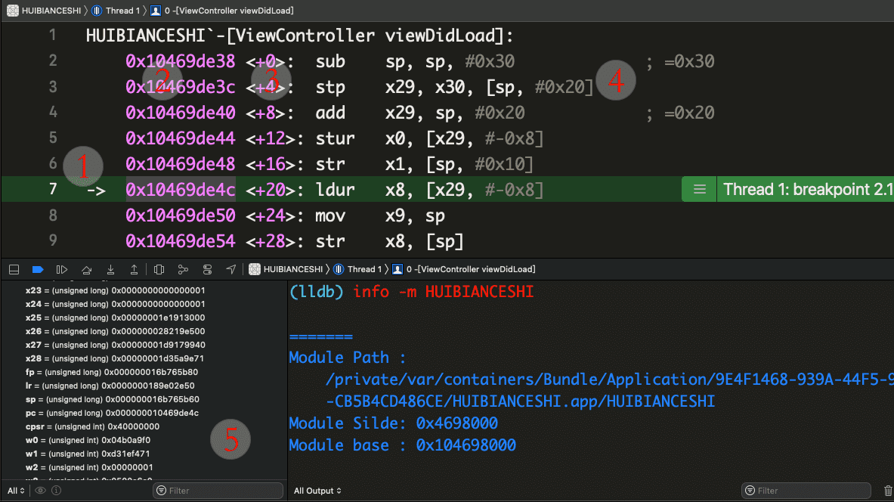
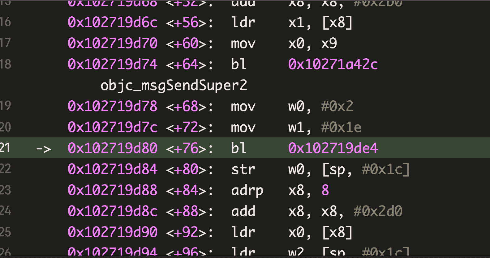
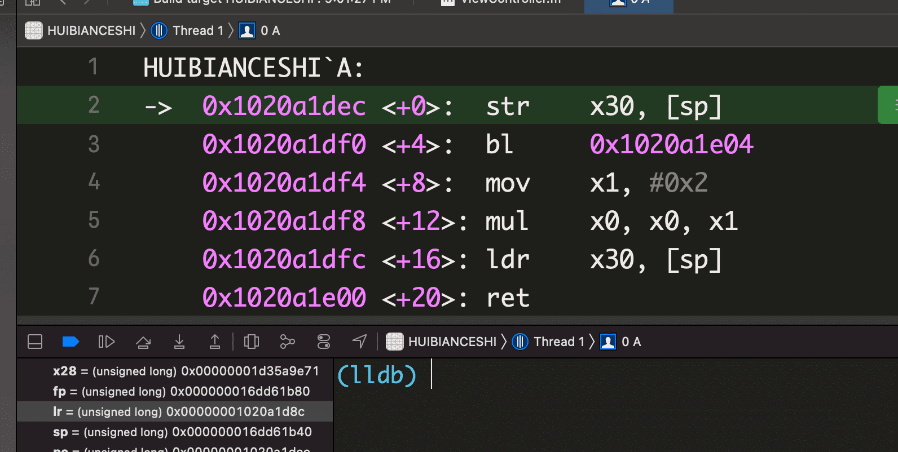
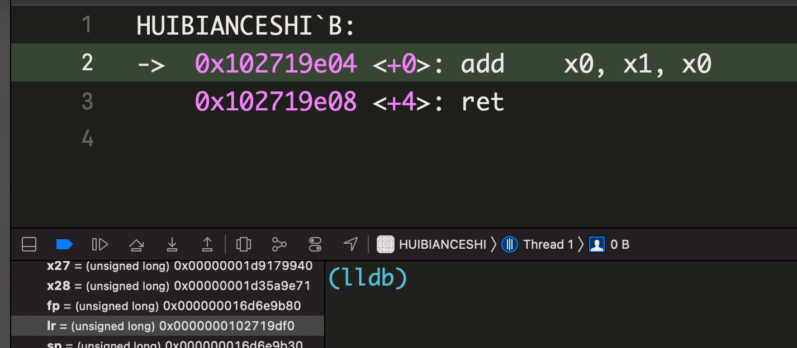
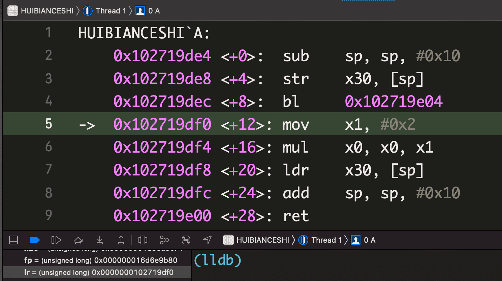
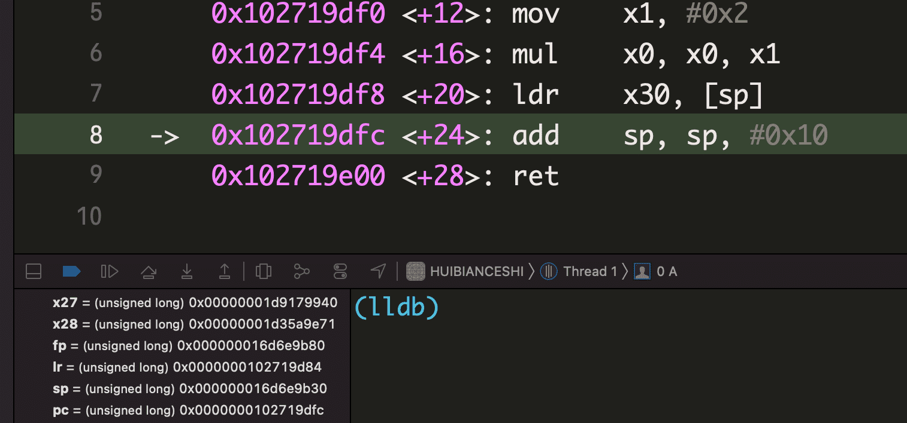

逆向学习笔记 - ARM64 汇编入门
开个坑，记录一下系统性地学习 iOS 逆向的过程，从汇编入门开始。在这之前对汇编基础和逆向有一些了解，所以文章只当做查缺补漏，记录本人认为有意思的点——虽然这个“缺”和“漏”有点大😁
以下汇编笔记基于 ARM64 整理，可能不完全适用于基于其他架构
我们写的文本代码，被编译器和链接器按照一定的格式转变成二进制字节流文件，在被操作系统加载执行时，文件又以一条条机器码的形式被映射到内存中，这些机器码有的可能只是一个数据集，也有的可能是一条汇编指令。对于 CPU 来说这些都不重要，它只关心往数据的读和写
CPU 和总线
CPU 上密密麻麻的针脚就是和总线相连的，总线是若干“根”导线的集合，按照功能可以分为地址总线、数据总线和控制总线。计算机（广义的）系统里面的组件由总线连接
地址总线
内存是按照存储单元划分的，每一个存储单元的大小为 1 B，并且都有编号，即地址，CPU 可以通过地址信息实现对存储单元的定位（寻址），完成内存的读和写操作，这个寻址过程是通过地址总线完成的。如果某一个 CPU 架构有 10 根地址总线，那么它可以寻址的范围为 $2^{10}$ ，可以说这个 CPU 的地址总线的宽度为 10。寻址过程可以类比为 10 个手指头按在键盘上的情形，规定每个指头按下去为 1，抬起为 0，某一次“打字”指头定位到不同的键帽时，就是一次寻址
ARM64 环境下，实例对象有一个用来指向类对象的指针
isa，它的值仅有 33 个 bit 用来保存真正的地址，说明 AMR64 的寻找宽度被 iOS 限制为了 33 ，这种模式所能支持的最大内存容量为：$2^{33}$ = $2^{23}$K = $2^{13}$M = $2^3$ G = 8G，目前 iPhone 12 Pro 的最大内存达到了 6GB，随着内存越做越大的趋势，未来 iPhone 的内存要突破 8GB 的限制，[1]isa的这套策略是不是要修改呢？数据总线
CPU 与内存或其他可读写组件之前的数据传送是通过数据总线完成的，数据总线的宽度决定了 CPU 的数据吞吐效率，8 根数据总线一次可以传送 8 位二进制数据，即一个字节
控制总线
CPU 对外部组件的控制是通过控制总线来完成的，控制总线的宽度决定了 CPU 对系统中其他组件的控制能力
寄存器
寄存器是 CPU 内部可以高速读写的部件，ARM64 CPU 中一共有 34 个，包括 31 个通用寄存器和 3 个程序状态辅助寄存器。对于通用寄存器，如果使用 x0 - x30 即表示访问一个 64 位数，如果使用 w0 - w30 即表示访问这些寄存器的低 32 位。另外还有三个特殊的寄存器：
SP：表示栈顶指针寄存器，里面的值始终指向当前栈帧的顶部PC：程序计数器，它总是指向要执行的下一条指令。它指向哪里，哪里就会被执行。一段机器码一旦被送入 PC 寄存器，就会被当做汇编指令执行。在 ARM64 中不允许直接更改 PC 寄存器的值CPSR：程序状态寄存器(current program status register)，包含条件标志位、中断禁止位、当前处理器模式标志和其他的一些控制状态位
初始汇编
Xcode 汇编环境
根据 Xcode 默认模板创建一个 iOS App 工程，在 -[ViewController viewDidLoad] 添加断点，设置 Always Show Disassembly，勾选 All Variables,Registers,Globals and Statics，在 ARM64 真机上运行起来后，进入断点：

- 左侧的箭头
->表示即将执行的指令所在地址，也是 pc 的值 - 后面一列十六进制数表示编译生成后的二进制代码段映射到虚拟内存后的地址。地址值 = __PAGEZERO.size + ASLR + File.offset
- 右边的尖括号 <+$2^{x}$> 表示指令的偏移值，数值表示十进制，字节为单位，可以发现 ARM64 的一条指令大小为 4B
- 最后面的就是汇编指令了，从机器码根据一定的规则翻译而来，翻译规则可以查询 ARM 手册
- Debug Area 勾选了
All Variables,Registers,Globals and Statics，所以可以看到寄存器的值。展开General Purpose Registers发现 pc 寄存器的值就是箭头指向的值
汇编程序
下面将编写一个小程序，通过函数嵌套调用来演示 lr 和 pc 如何相互配合实现栈平衡。在这之前先回顾一下关键的指令和相关寄存器。
- 基础指令：
str/stp/ldr/ldp，用于寄存器和内存之间的值传递str x8, [x9]：中括号表示寻址，str表示将寄存器数据放入到内存，这句话的意思是把 x8 中的数据存到 x9 所表示的内存地址中stp x29, x30, [sp, #0x50]：stp同str，但是可以同时操作两个寄存器，这句话表示把 x29 和 x30 的值，依次存入 sp 指向的位置，然后执行 sp = sp + #0x50。按照 iOS 中栈生长方向，x29 在高地址， x30 在低地址ldr x1, [x8]：将内存数据放入寄存器ldp x29, x30, [sp, #0x10]：同ldr，但是可以同时操作两个寄存器，表示从 sp 的位置，依次读取两个 8 字节数据，存入 x29 和 x30ret：return 指令，当前子程序结束后，返回到调用所在行的下一行，其实就是返回到 lr 寄存器记录的地址bl label：跳转到 label 处执行，同时将下一个指令存入 lrmov x1, x2：将 x2 的值赋值给 x1，用于寄存器之前传值
- 关键寄存器 lr：也叫 x30，约定让它来存放函数跳转前的下一条指令的地址，以便在子函数执行完毕后能回到调用它的地方
汇编程序：有两个函数，函数 A 接收两个形参，调用函数 B 完成相减计算，在 A 中对 B 返回的结果乘以 2 ，最后将结果回传给 A 的调用者。
- 在 Xcode 工程添加 asm.s 文件，写入以下内容
1
2
3
4
5
6
7
8
9
10
11
12
13
14
15.text
.global _A, _B
_A:
sub sp, sp, #0x10
str x30, [sp]
bl _B
mov x1, #0x02
mul x0, x0, x1
ldr x30, [sp]
add sp, sp, #0x10
ret
_B:
add x0, x1, x0
ret - 在
ViewController.m中添加如下代码。执行后发现能得到预期结果1
2
3
4
5
6
7
8
9int B(int a, int b);
int A(int a, int b);
- (void)viewDidLoad
{
[super viewDidLoad];
int a = A(2,3);
NSLog(@"结果:%@",@(a));
// 输出： 结果:10
} - 在
int a = A(2,3);添加断点，运行后如下图，注意bl的下一条指令地址为0x102719d84，理论上，此处bl语句执行后，lr 寄存器的值就会被设置成0x102719d84
 - 按住 Control 键，进入 A 函数，发现 lr 寄存器被正确设置了，这是编译器保证的。现在完全进入了自定义的程序流程，需要自己去关注这些寄存器的变化了。lr 寄存器只有一个，现在 A 中预期需要
bl _B，lr 将被默认设置为0x102719df0，如果不对原 lr 寄存器的值进行保护，那么 B 执行完毕后，lr 寄存器保存的仍然是0x102719df0，A 执行到ret语句时，会跳转到 lr 处，这样将导致 A 中出现死循环。所以子程序 A 一开始，需要开辟一个栈空间，用来保存它自己的返回地址。
 sub sp, sp, #0x10表示开辟一个 16 字节大小的栈空间（对栈的操作是以 16 字节对齐的），然后 sp 指向栈顶。iOS 的栈空间是从高地址向低地址生长，所以减操作即表示扩大栈空间。str x30, [sp]表示将 x30 的值存入 sp 指向的空间，sp 指向了栈顶，所以 x30 的存储在 [sp - 0x10, sp] 范围内，即往高地址写- 保护好了 x30 就可以跳转到 B 了，跳转后，lr 被赋值为
0x102719df0。A 被调用时两个形参分别放到了 x0 和 x1 中，跳转到 B 后，可以直接对 x0 和 x1 做加法操作，将结果存到 x0 用作返回值，接下来执行ret，跳转到0x102719df0返回到 A

 mov x1, #0x2将一个立即数 0x2 存入 x1 中，后面的mul表示乘法，并将结果放入了 x0 中- 现在返回值已经放到了 x0，是时候返回到调用 A 的地方了。
ldr x30, [sp]表示从 sp 指向的地方读取数据存入 x30，此处将原先保存的回调地址给回了 x30。此处肯定是往高地址读，因为低地址不属于当前的栈帧，不能随便读 add sp, sp, #0x10退栈，还回刚刚申请的 16 个字节空间，此时 lr 的寄存器应该是0x102719d84，执行ret后，就可以返回到调用 A 的地方了
- 开辟栈空间存入 lr、fp 和取出 lr、fp 归还栈空间这两步操作非常套路化，所以有了简化指令，就是在 Xcode 高级语言编译成的汇编代码的界面可以看到的
stp x29, x30, [sp, #0x40]和ldp x29, x30, [sp, #0x40]
后记
- 之前在看反汇编代码时，看到形如
stp x29, x30, [sp, #0x40]和ldp x29, x30, [sp, #0x40]这类指令时非常困惑，而且非常有规律，分别出现在一个子程序的开始和结尾处，自己也查找了一些大佬的博客，有说到是对栈帧进行保护，不过总感觉都说得比较抽象，不在自己的认知范围内，也可能是大佬觉得这是很显而易见的事情懒得多费口舌吧。。。总之还是得自己动手去调试一遍调用流程，才能有更深入的理解 - 上述汇编程序，和实现了同样功能的高级语言反汇编出来的有些不一样，这中间涉及到编译器优化，但具体原则不是很清楚
- 从理论上说，内存空间是连续的，一个栈结构需要一个 top 指针（sp），当然也需要一个 bottom 指针（fp），而且随着嵌套的深入，每个栈帧都有自己的栈空间，或大或小，必然要知道一个栈帧的实际空间大小。不过目前还没有遇到什么场景要依据 fp 才能进行的，所以对于为什么要保护 fp 理解得还不是很深
- 学习汇编还是需要多看代码，尤其是需要对照高级语言来看编译生成的汇编代码
- 这里把 CPU 寻找理想化了。33 位的寻找，在 CPU 视角，最大可以查找 $2^{33}$ 个内存单元，每一次查找的对象都是一个字节，所以可以查找的最大内存地址是 $2^{33}$ = 8G Byte，但 CPU 寻址讲究内存对齐，按照 8 Byte 对齐的话，真实可支持的内存空间就是 8*8GB。所以
isa的这一套还是很稳。 ↩
本博客所有文章除特别声明外，均采用 CC BY-SA 4.0 协议 ，转载请注明出处！